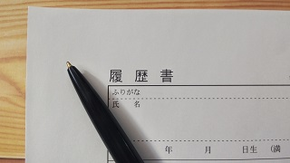

コロナ禍における理系学生の就職活動
私は京都にある大学の理系学生で、2021年3月現在で3回生（３年生）です。ちょうど先日、就職活動を終えたところなので、その経験を基に、
コロナ禍における理系学生としての就職活動で苦労したことや悩んだこと、
そしてどのような職種をなぜ選んだかをお話ししたいと思います。
やはりコロナウイルスの影響は大きい。。。
まず苦労したことや悩んだことに関してですが、やはりコロナウイルスによる不景気の影響はあったと思います。
あくまで体感でしかないのですが、先輩などの話を聞く限りはやはり以前の方がスムーズに採用が進んでいたように思います。
就職するか、大学院に進学するかの分岐点

ここでまず悩んだことが1つありました。それはコロナ禍の不利な就職活動を避けるために大学院進学を行うことです。
確かにそれはそれで賢明な選択だとは思うのですが、個人的にはまず社会を見たかったこともあり、学部卒で就職という選択を採りました。
正直今のところ、大学院にいってまで研究したいことはありません。
ただし研究というものに対しては興味もありました。
ですので、実際に働いてみて、その上で興味を持ったことを見つけたら大学院に行けばよいと考えました。 その他に悩んだことは就活と勉強の両立です。
私はあまり要領がよくないので、就活を行っているという事実だけでエネルギーが取られてしまい、
そのうえで期末試験などを迎えなければいけないということはかなりの精神的負担がありました。
これに対する解決策ですが、単に「気合いで乗り切る」でした。
どんなに大変でも二ヶ月くらいまでは何とか頑張れます。
そこは通過儀礼だと思って割り切るしかありません。
また理系だとどのような職種があるかと言えば、なんでもあります。
採用されるかどうかは別として、ほとんどすべての企業と職種にエントリーできます。
一部機械系の技術職ですと、理系の中でも機械系や電気系しかエントリーできない場合もありますが、
それを除けば文系職であってもエントリー可能です。
大手ではなく、ベンチャーへ
それではつぎに、私が就職する企業の業種と職種について述べたいと思います。
私が就職するのは東京にあるITベンチャーで、職種はデータサイエンティストです。
なぜITベンチャーを選んだかといえば、
データサイエンティストという職種のある企業が外資系コンサルやベンチャーくらいしかなく、
そして外資系コンサルは不採用を頂いてしまったからです。
データサイエンティストという職種はかなり新しいもので、
三月から本格的に採用活動を始めるような伝統的な日系企業には募集はまずありません。
ですので、早めに内定を頂いたITベンチャーで手を打ちました。
しかし、当初はITエンジニアを志望して就職活動を行っていました。
ITエンジニアの志望動機
なぜITエンジニアを志望していたかといいますと、ITエンジニアとして経験を積み、
エンジニアリング力を高めた後に転職によってデータサイエンティストを目指そうと考えていたからです。
ですから結果としてはエンジニアを経ずにデータサイエンティストになることができるわけであり、
キャリアの短縮を図ることができました。
データサイエンティストの志望動機
ではなぜ私がデータサイエンティストという職を志望していたかといえば、それには主に以下の3つの理由があります。
➀将来性が高い
➁自分の大学での専攻を活かすことができる
➂伝統的な働き方に縛られにくい
まず➀についてですが、現在国がデータサイエンティストの育成に取り組んでいるという事実があります。
これからの高度情報化時代における人材としての期待が大きくかかっているので
（ここの事情は慶応義塾大学の安宅先生が書かれた「シン・ニホン」に詳しいです。
興味のある方はぜひお読みになってください）、それだけ活躍の幅や待遇も大きいのではないかと考えました。
次に➁についてですが、日本データサイエンティスト協会によりますと、
データサイエンティストという職種にはエンジニアリング力とサイエンス力とマーケティング力の三つが必要とされています。
このうちのサイエンス力に関しては数学が中心となるものです。
私は数学を専攻していますので、大学で学んだことが直接活かせるように感じました。
そして最後に➂ですが、私は伝統的な日本企業的働き方をしたくないと以前から感じていました。
特に疑問を持っていたのは終身雇用です。最近はかなりそうしたことも改善されてきているとは思いますが、
それでも依然として根強く残っているとは思います。
ただエンジニアやデータサイエンティストなどは実力の定量化が容易で、
それだけ転職も（しっかり実力をつければ）簡単であると思います。
実際のところ、データサイエンティストのような新しい職種であっても、
会社務めには違いないので、日本的な終身雇用の影響を完全に脱することは難しいとは思いますが、
それでも文系職に比べればはるかに可能性があると感じています。
最後に
以上で私の就職体験記を終えようと思います。みなさんも悔いのないように就職活動を頑張ってください。